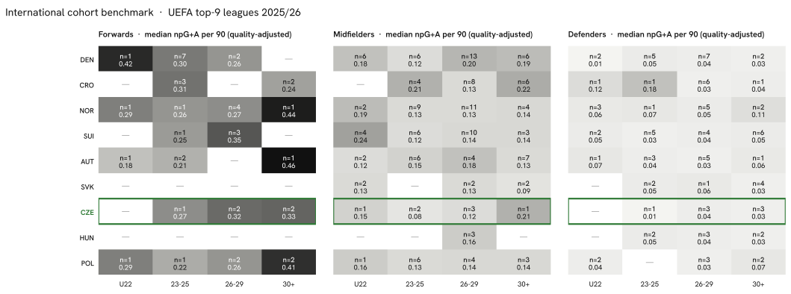

Summary · Question 3 of 14
Explore the data
Benchmark vs peer countries
Structural benchmark vs peer countries
Football intuition recognises the Czech pool player by player. Its structural position among the peer countries needs an aggregation nobody holds in one place. Three numbers below that are usually not collected together.
Cohort gaps — forwards
| Cohort | U22 | 23-25 | 26-29 | 30+ |
|---|---|---|---|---|
| Czechia | — | 1 | 2 | 2 |
| Denmark | 1 | 7 | 2 | — |
| Croatia | — | 3 | — | 2 |
| Austria | 1 | 2 | — | 1 |
| Switzerland | — | 1 | 3 | — |
Cohort gaps — midfielders
| Cohort | U22 | 23-25 | 26-29 | 30+ |
|---|---|---|---|---|
| Czechia | 1 | 2 | 3 | 1 |
| Denmark | 6 | 6 | 13 | 6 |
| Croatia | — | 4 | 8 | 6 |
| Austria | 2 | 6 | 4 | 7 |
| Switzerland | 4 | 6 | 10 | 3 |
Cohort gaps — defenders
| Cohort | U22 | 23-25 | 26-29 | 30+ |
|---|---|---|---|---|
| Czechia | — | 1 | 3 | 3 |
| Denmark | 2 | 5 | 7 | 2 |
| Croatia | 1 | 1 | 6 | 1 |
| Austria | 1 | 3 | 5 | 1 |
| Switzerland | 2 | 5 | 4 | 6 |
* Count and median npG+A per 90 of players with the country's nationality in a top-9 league, 2025/26, at least 450 minutes; cohort by age at the season's calendar turn (start year + 1 − birth year). 5 of the 9 countries are shown; the heatmap above carries all of them. Largest Czech shortfalls against the peer median count: midfielders 23-25 (2 vs 6), midfielders 26-29 (3 vs 6), midfielders 30+ (1 vs 3.5).
The full picture, all nine peer countries at once, as a heatmap:

Observations
Per capita: rank 7 of 9 · The largest cohort gap: midfielders 23-25 · Trajectories 2024/25 → 2025/26: mostly stable
Per capita: rank 7 of 9
26 Czech players on 2025/26 rosters of the nine strongest leagues give 2.39 per million inhabitants, rank 7 of 9. Denmark leads with 12.58, 5.3 times the Czech density; Slovakia sits one place above with 3.14 from 17 players and a population 2.0 times smaller. Below Czechia: Hungary, Poland.
The largest cohort gap: midfielders 23-25
Counting 2025/26 top-9 players by position group and age cohort and comparing the Czech count with the median of the other eight peers, the three largest shortfalls are midfielders 23-25 — 2 Czech against a peer median of 6; midfielders 26-29 — 3 Czech against a peer median of 6; midfielders 30+ — 1 Czech against a peer median of 3.5. The cohort tables above show the medians behind the counts.
Trajectories 2024/25 → 2025/26: mostly stable
92 Czech-eligible players had at least 900 minutes in both 2024/25 and 2025/26: forwards 13 (5 up, 6 stable, 2 down); midfielders 43 (3 up, 31 stable, 9 down); defenders 36 (1 up, 34 stable, 1 down). A move counts as up or down when league-adjusted goals + assists per 90 changed by more than 0.05; 71 of 92 stayed within that band. These are season-over-season deltas, not projections.